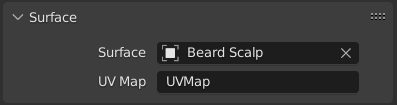

When adding curves there are some common options like other Objects.
Note
Eventually all the primitive curves will be replaced to use the same curve system used for hair curves.
Until this is done, their features will diverge.
They can be converted interchangeably to access the full range of edit and sculpting functionalities.
In Object/Edit Mode, the Add Curve menu, provides a few different curve primitives:
Hair curves, while similar to regular curves are a bit different and have their own selection tools.
Many of these match their regular curve tools but are implemented differently
All hair curve selection operators are documented below for completeness.
These selection operators work in both Sculpt and Edit modes.
Selection modes limits selection operators to certain curve domains.
This feature is makes it easy to select whole segments at once, or to give more granular control over editing.
Curves objects also have basic editing support in “Edit Mode”.
Currently, only the basic Transform and Delete operators are supported.
The Delete operator can remove Control Points or Segments.
Deleting can be used to make curves shorter or simplify
segments by deleting control points in the mid section of a segment.
The curve surface is an optional mesh that is used to anchor the curves, and behave as a scalp for hair grooming.
When adding a new Curves object via the Add Menu the active object is automatically set as the surface.
To set a new surface press Ctrl-P and select Object (Attach Curves to Surface)
in the Set Parent To pop-up menu. This option can be seen as part of the Curves settings in the Properties
Editor.

Surface UV Map
The name of the attribute on the surface mesh used to define the attachment of each curve.
Adds a fur setup to the selected objects.
The fur setup is based on Geometry Nodes and built with
Hair Node Groups that come with Blender as bundled assets.